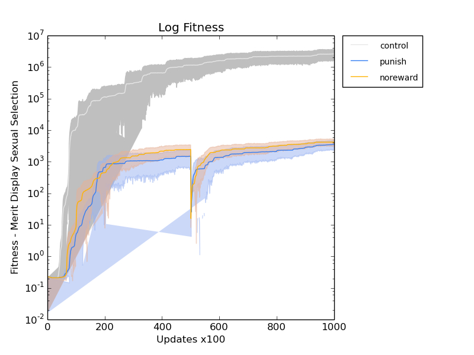
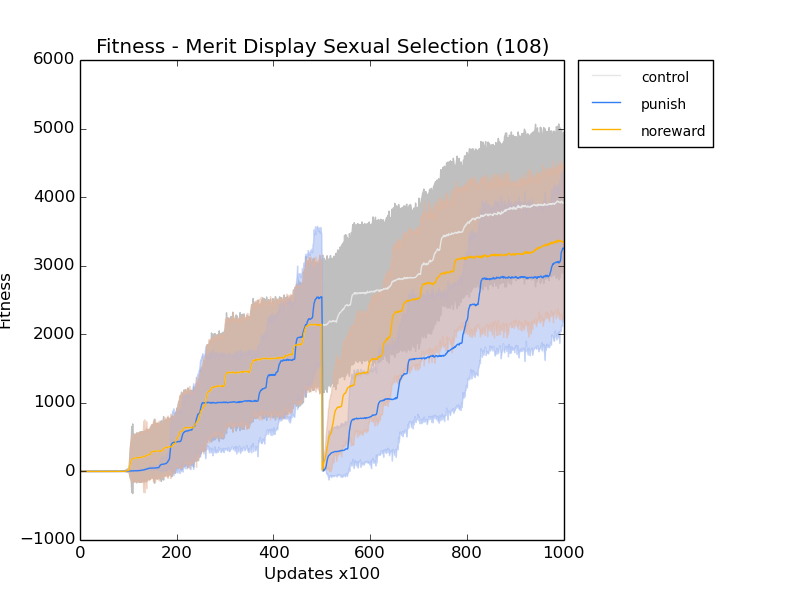
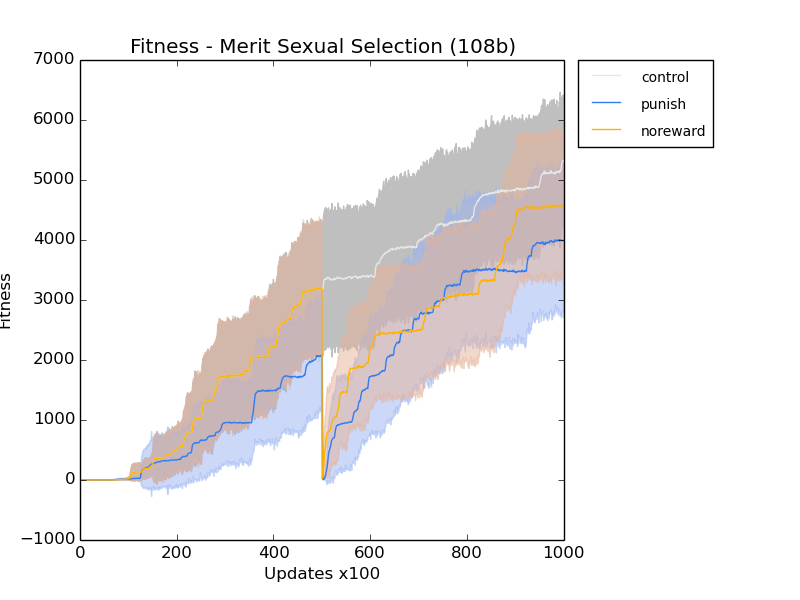

Right, so nothing got done all last week after doing the basic analysis of results. And I can’t even remember what the basic experiments were that I was supposed to be doing. :(
Ok, let’s try to reconstruct the conversation...
Basic as fuck experiments - sexual reproduction, with a changing environment.
Add sexual selection?
I need to have a way for selection to work. So, my organisms have to be able to select based on merit, and then a task that does merit.
So, that means editing or adding an instruction so that it can do merit display
I implemented a merit display instruction that they have to have in their genome before they can be selected for mating. https://github.com/devosoft/avida/wiki/Using-mating-types-%28separate-sexes%29
I edited:
.gitignore
avida-core/include/public/avida/core/Definitions.h
avida-core/source/actions/PrintActions.cc
avida-core/source/cpu/cHardwareCPU.cc
avida-core/source/cpu/cHardwareCPU.h
avida-core/source/main/cPhenotype.cc
avida-core/source/main/cPhenotype.h
It looks like half of the females are using it by 20k generations.
I’m going to run a couple of experiments, just with the basic swap thing, making sure it all works.
The first set of runs is just the basic thing, with selection based on direct merit.
rosiec@edi:~/__research/sexual_selection/configs/102_Merit_Sexual_Selection$ val=control; for i in {102001..102030}; do cp -r config/ output/val"_"i ; cd output/val"_"i ; echo ./avida -s i -set EVENT_FILE events.cfg | batch ; cd .. ; cd .. ; echo ; done rosiec@edi:~/__research/sexual_selection/configs/102_Merit_Sexual_Selection$ val=noreward; for i in {102001..102030}; do cp -r config/ output/val"_"i ; cd output/val"_"i ; echo ./avida -s i -set EVENT_FILE events_noreward.cfg | batch ; cd .. ; cd .. ; echo ; done rosiec@edi:~/__research/sexual_selection/configs/102_Merit_Sexual_Selection$ val=punish; for i in {102001..102030}; do cp -r config/ output/val"_"i ; cd output/val"_"i ; echo ./avida -s i -set EVENT_FILE events_punish.cfg | batch ; cd .. ; cd .. ; echo ; done
The second batch is based on an instruction that displays merit, instead of merit directly.
rosiec@edi:~/__research/sexual_selection/configs/103_Merit_Display_Sexual_Selection$ val=control; for i in {103001..103030}; do cp -r config/ output/val"_"i ; cd output/val"_"i ; echo ./avida -s i -set EVENT_FILE events.cfg | batch ; cd .. ; cd .. ; echo ; done rosiec@edi:~/__research/sexual_selection/configs/103_Merit_Display_Sexual_Selection$ val=noreward; for i in {103001..103030}; do cp -r config/ output/val"_"i ; cd output/val"_"i ; echo ./avida -s i -set EVENT_FILE events_noreward.cfg | batch ; cd .. ; cd .. ; echo ; done rosiec@edi:~/__research/sexual_selection/configs/103_Merit_Display_Sexual_Selection$ val=punish; for i in {103001..103030}; do cp -r config/ output/val"_"i ; cd output/val"_"i ; echo ./avida -s i -set EVENT_FILE events_punish.cfg | batch ; cd .. ; cd .. ; echo ; done
Ok, for the meeting tomorrow, I want to talk about
architecture of avida
sexual selection in Avida
experimental design
sexual organisms evolve with a variety of merit-based display traits in common environment
wall drops down, preventing organisms from mating across the wall
organisms are allowed to evolve
wall is raised. do organisms mate-discriminate against heterospecifics?
discussing the effects of sexual selection on
build the “buildDisplay” instruction, which applies what’s in your registers into the display. Let females do a similar thing and select for the built display.
There is a concern that you would have phenotype matching, and we don’t want to constrain.
post my slides to google docs so that others can see.
look at my noisy discrimination rate. lower the noise to 1%.
My runs weren’t working on the HPCC for a FUCK TON of stupid fucking reasons and a series of annoying coincidences. I think my runs will now work in the usual fashion, by using dist_run_beta. HOORAY.
After a pretty frustrating week of my runs not working, I was able to get some runs to go. Of particular interest is run 107.
caninoko@dev-intel14:~/sexual_selection_and_evolvability/output/107_Merit_Display_Sexual_Selection/summary$ python ~/research_scripts/quickplot.py --ylog -y "Fitness - Merit Display Sexual Selection" -x "Updates x100" --title "Log Fitness" --error fitnesses average.dat 4 "../control_*/data/" control average.dat 4 "../punish_*/data/" punish average.dat 4 "../noreward_*/data/" noreward

These runs compare the effect of the different changing environment regimes vs a control (not a good one, sadly) in a context of sexual selection against displayed merit. The controls are fixed in the next set of runs (108 and 109). 109 uses the same seeds as 108. 108 is the direct merit selection, and 109 is the merit display selection. The fixed controls will only reward half of the tree (the starting half) the whole time, instead of double the reward (oops). I think the weird error bars have to do with the log display. So, once my shit is comparable, I’ll be able to remove that. Maybe fix it at some point. meh.
Interestingly, the noreward/punish regimes behave pretty similarly.
So, when 108 and 109 are done, I’ll be able to directly compare the merit display vs direct merit selection.
Argh, why am I doing these experiments? Is it for my explorations of sexual selection? Right now, I just feel like I am literally going through the motions, and have entirely lost the plot. D: Pulling my hair out. But I’m DOING something, which is better than wasting my time on other random shit. Anyway, those other runs are going, and should be done in the next couple hours.
TODO: FIGURE OUT WHAT/WHY I AM DOING THE ABOVE.
----
Next separate set of thoughts: stickleback. I need to think about an appropriate display for the sticklebackavidians to use to select their mates. During the meeting, Jason and Jen expressed concern about locking in phenotypic matching as the selection method. I can see what they are getting at, though I suspect they got it accidentally. So, how to build up a random enough set of traits that can be chosen among, or have them built up separately so that phenotypic matching isn’t automatic?
My 108 job got finished. Looks like 109 will be done in about half an hour, if the gods are good.
caninoko@dev-intel14:~/sexual_selection_and_evolvability/output/108_Merit_Display_Sexual_Selection/summary$ python ~/research_scripts/quickplot.py --title "Fitness - Merit Display Sexual Selection (108)" -x "Updates x100" -y "Fitness" --error 108_fitnesses average.dat 4 "../control_/data/" control average.dat 4 "../punish_/data/" punish average.dat 4 "../noreward_*/data/" noreward

Right, so it looks pretty much as expected.
The 108b (109) run completed.

Also looks pretty much as expected. No surprises there. In conclusion, Merit vs Merit Display act pretty much the same.